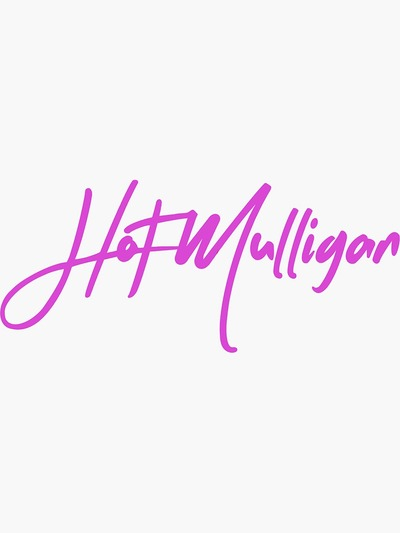
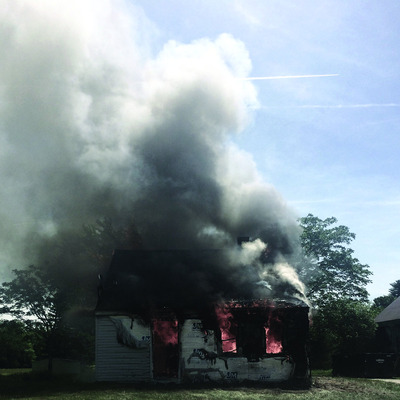

Bands I like
These are all bands that I enjoy listening to, they have a pretty unique style and that's something I appreciate. Modern Baseball is the only band in this list with a real "logo" for their band, Old Gray's picture that I chose is just the cover art of one of their albums. Hot Mulligan uses their pink text "logo" sometimes on merch and posters for their concerts.
Modern Baseball
I really like Modern Baseball and I learned about them in my sophomore year of high school. A good friend named Bo let me know about them and I've never stopped listening.
Hot Mulligan
Bo also told me about this band, I've been to three of their concerts and I really like them. Their sound has definetely evolved and I don't like their newer albums as much, but still an amazing band.
Old Gray
Bo did not show me this band, and surprisingly he doesn't really like them. I think they make good music, not for everyone though.
My favorite song by all of these bands is The Thrash Particle by Modern Baseball.